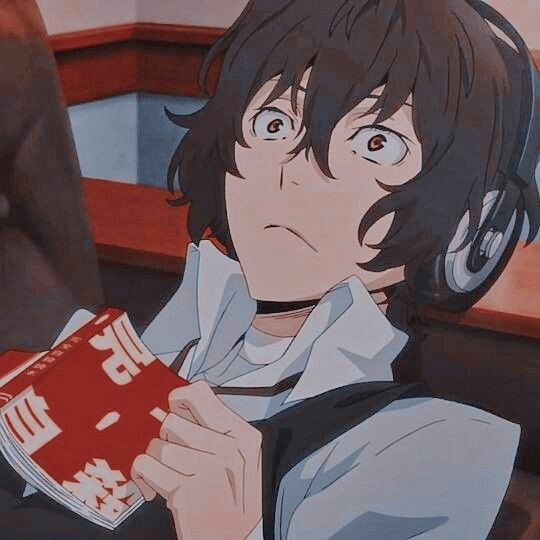

i'm terribly sleepy

Riki was struggling. Sure, he had other members who was older than him to rely on. But neither of them reached out for him, they never cared. He is only a teenager, what is there to stress about. He didn’t have the responsibility of being the eldest or being the leader, but he was still struggling deep inside. He needed help, he was drowning with the endless self doubt he had for himself but he kept everything to himself, he didn’t want to burden the others, they had their own issues.